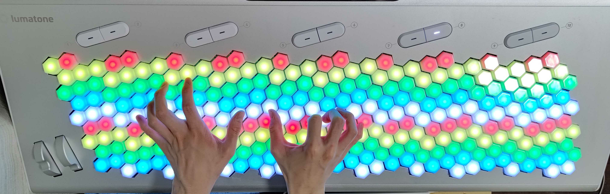
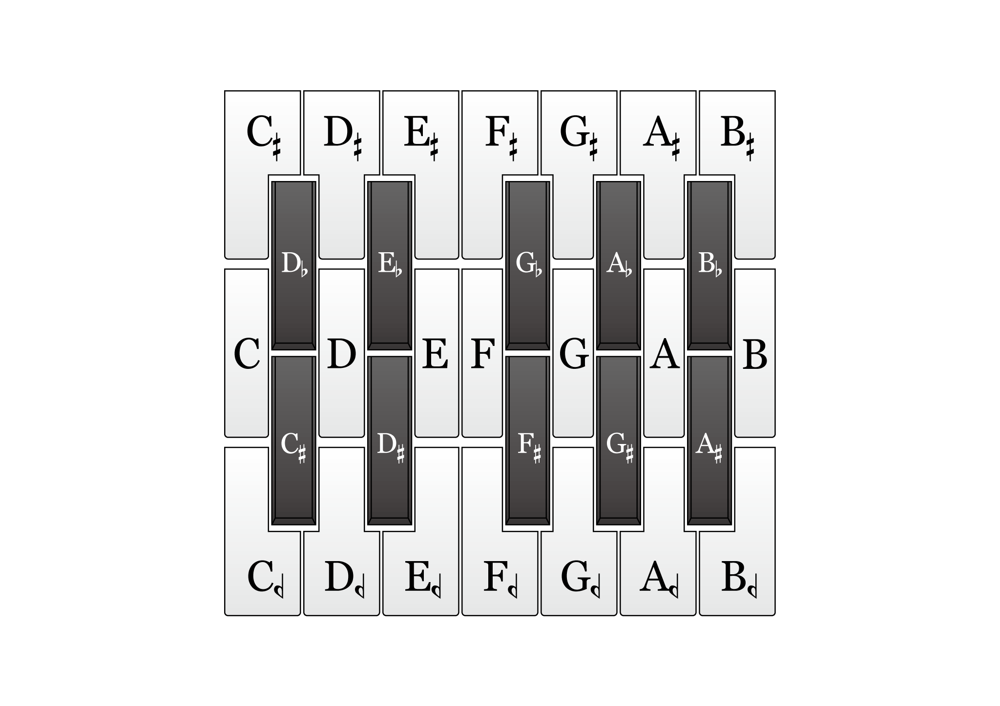
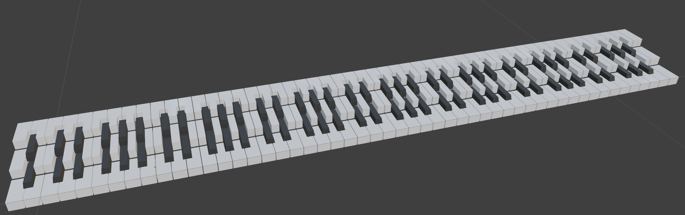
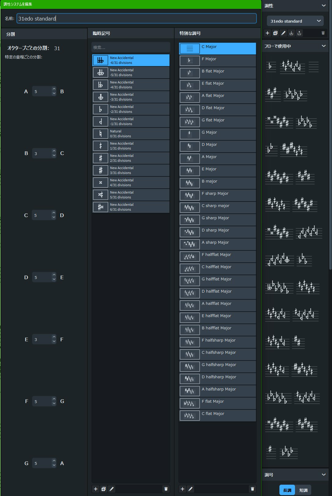

第Ⅳ部 31平均律 ─ 5
記譜・音名・鍵盤・指板
この節は31edo「身体側」です。
名前をどう呼び、紙にどう書き、指をどこに置くかを一括で考えます。
本書第Ⅳ部の標準としてここでは音名は Stein–Zimmermann 記号を主体とし（±1歩＝ハーフシャープ ／ハーフフラット 、±2歩＝通常の♯♭）、拡張ミーントーン的な綴り（D𝄫 等）も理論的な由来が特別ある場合の記法になっていきます。
31音の名前 ── Stein–Zimmermann 主体の体系
規則は2つだけです。
（1）幹音から±2歩以内はその幹音の変化音として書く：+1＝ハーフシャープ 、+2＝♯、−1＝ハーフフラット 、−2＝♭。
（2）全音間隙（5歩）は上下から2歩ずつで埋まり、全音階的半音間隙（3歩：E–F、B–C）は上下から1歩ずつで埋まる。
これで31音すべてに過不足なく名前が付きます。セスキシャープ ・セスキフラット ＝±3歩）も規格にはありますが、本書の説明では特段の理由が無い限り主に使いません。D♭ と書けるものを理由なくC とは書かない、という方針です。
鍵盤 ── isomorphic 配列
31音を従来型の鍵盤に足すと黒鍵が4本も林立して大変です。フォッカーがオルガンに採用したのは Bosanquet 型の isomorphic 鍵盤で、鍵を格子状に並べ、音程を格子ベクトルに対応させる rank-2 的な設計でした。現代の Lumatone も同じ思想の六角格子です。
要点は等音程性（isomorphism）です。鍵盤の重複を許して配置すれば、同じ音程は盤面上で常に同じ形になるため、和音もフレーズも移調しても指の形が変わりません。調ごとに運指を覚え直す苦労が原理的には消えます。

筆者撮影
指板 ── フレット楽器の現実
フレット位置は弦長 \(L\) に対し \(d_k = L\,(1 - 2^{\frac{-k}{31}})\) です。
スケール（ナットからブリッジまでの長さ） 647.7 mm のエレキギターなら第1フレットまで 14.32 mm、1オクターブ（第31フレット）で 323.85 mm。
12edo の22フレット相当であれば、31edo では57本のフレットが打たれる計算になり、第56～57フレット間は 4.094 mm までに迫ります。
12edo の1フレットの間に 31edo では約2.6本のフレットが立つ計算で、ハイポジションでは指の太さが実際の制約になります（が練習次第で弾けます）。

筆者所有・撮影
31音を「白鍵3段・黒鍵2段」で理解する

図は筆者が作成
ここまでは六角格子という旧来のアプローチの話でした。でも、鍵盤に見慣れた我々はどうやって31音を単純に認識したらよいか、また、これらのハードがどのように31音を扱っているか、専用機がなくても MIDI 環境で 31edo を簡単に扱うにはどうするか。
これは本来制作の実務の話題ですので、第Ⅶ部（Ⅶ-5）でじっくり扱います。ここではその軽い予習として、31音を平面に並べる代表的な一案だけを図で眺めておきます。白鍵を3段・黒鍵を2段に積み、5段で31音を並べる配置です。
下図は、中段白鍵の起点を 31edo の「ド」（MIDI No.60, Ch.1＝0番目）とし、そこから上下・左右に31音を並べたものです。（数字は各音の歩数、色は MIDI チャンネル）。
白鍵3段・黒鍵2段という配置をまず考えます。この配置の狙いは、幹音（C･D･E･F･G･A･B）を中段白鍵としてそのまま残し、♯と♭の上下段黒鍵のエンハーモニックを分け、各幹音の周囲にハーフシャープ・ハーフフラットを上下の段へ振り分けることで、12edo の鍵盤感覚を土台にしたまま、31edo へ理解が届きます。そして実務では、この31鍵をMIDI の3チャンネルに振り分けてMIDI ノート12個ぶんへ畳み込むという手筋が要になります。その仕組みと、DAW 上（Reaper v5 のピアノロール配色・Ch.1＝赤・Ch.2＝黄・Ch.3＝緑）による運用は、またⅦ-5 で詳説します。

モデルは筆者が作成
精密レイヤー ── 記譜の実務メモ
五線譜上の運用規則を確認します。
（1）Stein–Zimmermann （S-Z）記号は通常の変化記号と同じく小節内有効で、同音の再変化は明示します。
（2）調号はそのまま使えます。また、S-Z 記号を調号に取ることもできます。31がミーントーンである（♯♭が2歩として整合する）ことの恩恵で、調性音楽の記譜慣習が無傷で生き残ります。
（3）Sagittal との対応（Ⅲ-6）は、S–Z のハーフシャープ＝Sagittal の （11M ディエシス）＝ups and downs の ^となります。移行はこの対応表で機械的に行えます。
（4）歌手や管弦楽者向けには「31edo では♯と♭の区別が明確になり、♯と♭の半分がある」という説明が最速で通じます。ハーフシャープは「♯に半分行く」。31の1歩＝38.7¢ は訓練された奏者の制御範囲内であり、実際、弦楽アンサンブルのミーントーンでの演奏は古楽などで歴史的奏法として確立しています。

画像は Dorico 5 の調性編集機能。
拡張ミーントーン由来のさらなる異名同音が存在。鍵盤はisomorphic 配列で「同じ音程＝同じ形」の実機が存在する。ギターはオクターブに31フレット打てばよい。
実質的には白鍵が3段、黒鍵が2段。